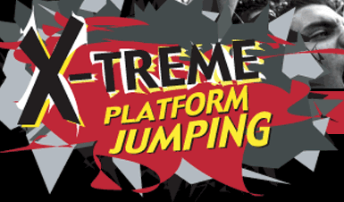
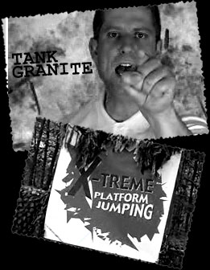

|  |
|
|  |
When you think of TOTALLY AWESOME JUMPS, you think of Action Blast Land. And when you think of Action Blast Land you think of one man - Tank Granite. Like many stars of critically acclaimed JUMPING games before him, Tank wanted to use his fame and fortune to open a school to teach jumpery and other awesome skills to young people all over the world. But Tank had one rule in mind for his school - it had to be VERY XTREME. Founded during the gilded age of Xtremity (1997-1998), XPJS has become one of the most successful Platform Jumping schools in the world. Every year, hundreds of hopeful students from all over the country come to XJPS to learn from the master himself - and for good reason. Tank and his expert staff are the best at doing XTREME THINGS. Thanks to Action Blast Land star Tank Granite and XPJS the AWESOME JUMPING CHAMPS of tomorrow are here today. XPJS has XTREME OPERATIONS LICENSES in 23 states and offers courses in three languages. |